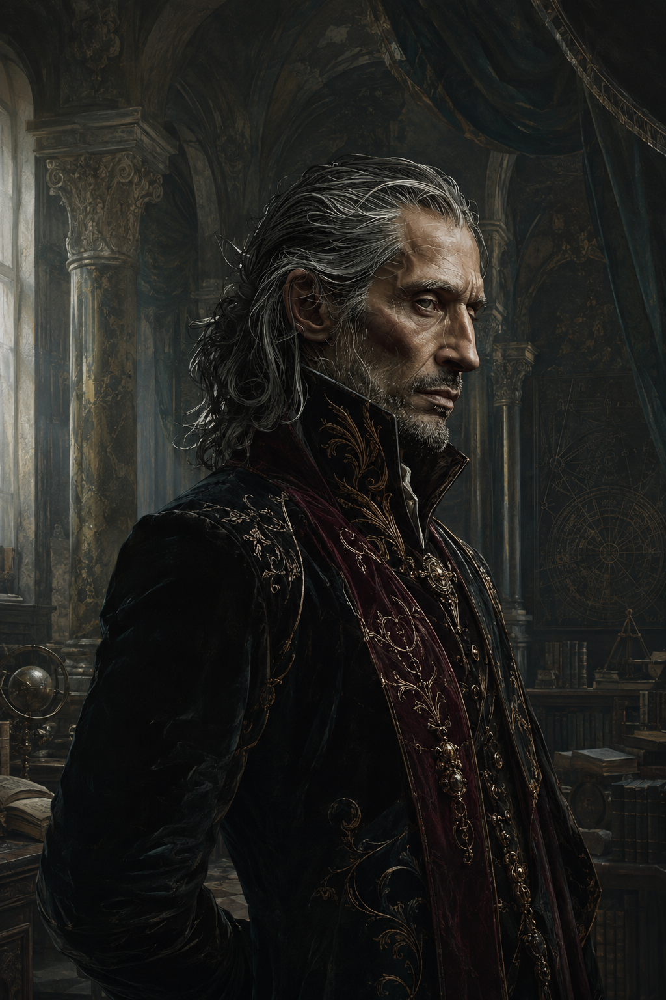

L’émancipation
Orkhal libère Atamore de ses obligations. Atamore accueille cette liberté avec enthousiasme et voyage pendant environ deux mois.
Figure centrale
Obscurantiste, Inspiré, fondateur d’une Académie et chercheur toujours attiré par ce qui se dérobe à la compréhension. Les sources dessinent moins un héros simple qu’un homme de savoir, de contrôle et d’ambition, confronté à ce qu’il ne parvient pas à maîtriser.

La vie documentée d’Atamore se lit comme une progression : voyager, enquêter, bâtir, puis voir une partie de cette maîtrise lui échapper.
Orkhal libère Atamore de ses obligations. Atamore accueille cette liberté avec enthousiasme et voyage pendant environ deux mois.
Il rejoint Lorgol à la recherche de Dradonus, bénéficie de l’hospitalité de l’École de l’Étincelle et rencontre notamment Asherim. C’est le premier portrait clair d’un Atamore curieux, mobile et avide de découverte.
Siniath Panangol le fait venir discrètement dans l’affaire Aldrène d’Orfeuil. Atamore entre alors dans une posture d’enquêteur déjà suffisamment reconnu pour qu’Arpage recommande son nom.
Atamore fonde l’Académie obscurantiste de Vertelarme. Son savoir devient institution, territoire et autorité.
Le Masque, le double, l’Académie, Mélif, les danseurs, les Abysses, Pazzoli et la conjuration composent une année où Atamore élargit son savoir tout en perdant plusieurs formes de contrôle.
Les traits ci-dessous viennent des actes, remarques et notations du journal plutôt que d’un profil psychologique inventé.
Atamore étudie les danseurs, dissèque, suit des cours d’Accord avec Erafel et tente une mise en équation de la Danse Rédemption. Il cherche à transformer l’intuition magique en système compréhensible.
Il peut se montrer critique envers les institutions et leurs représentants, mais respecte explicitement les personnes qu’il juge compétentes — comme Larménius, qu’il qualifie de « personne de valeur ».
Atamore utilise Émotions Exacerbées pour influencer Edeln, expérimente sur des condamnés et cherche une domination mentale absolue. Les sources ne demandent pas de le blanchir ; elles montrent aussi qu’il reconnaît certaines de ses propres limites après la catastrophe de Daryl.
Il voyage dans les Abysses, possède ou a possédé un diablotin, consulte l’Advocatus Diabolus, achète des encres et commence à apprendre la conjuration à Pazzoli.
Le site ne réduit pas Atamore à sa chronologie : certaines relations éclairent directement ses choix et ses pertes.
Relation affective la plus documentée. Atamore s’attache à elle, doute du caractère presque trop favorable de son intérêt, redoute leur séparation temporaire et poursuit son rapprochement pendant le voyage vers Lorgol.
Confiance forte, compagnonnage durable et irritation fréquente face à son jugement. Atamore sacrifie Taprium pour sauver Philippe et Graham à Mélif.
Partenaire naturel pour les enquêtes, les informations sensibles et les affaires clandestines. Atamore lui confie notamment les pistes liées à son empoisonnement.
Ancien maître et référence persistante. L’émancipation de 1441 ne met pas fin au lien : Orkhal reste présent dans les moments de crise.
Essentielle dans l’affaire du Dragon-Cendre et à Sombreçonge. Sa proximité personnelle avec Atamore reste encore mal documentée.
Celui qui ouvre la Compagnie à la réalité des Inspirés et du Masque. Sa disparition devient l’un des premiers grands moteurs de 1450.
Un motif revient dans les sources : plusieurs choses qu’Atamore cherche à posséder, protéger ou maîtriser finissent par lui échapper.
Danseur sacrifié au Lac de Geladieu pour sauver Graham et Philippe.
Disparaît après l’empoisonnement de Mélif. Son sort reste inconnu.
Son double provoque sa perte de fonction et compromet son identité institutionnelle.
Après Daryl, les autres danseurs sont trop traumatisés pour continuer à travailler normalement avec lui.
Philippe brûle la roulotte après l’expérience de Daryl, détruisant preuves et affaires d’Atamore.
Assassiné le 7 Tarasque 1450. Le journal d’Atamore ne documente pas sa réaction immédiate.